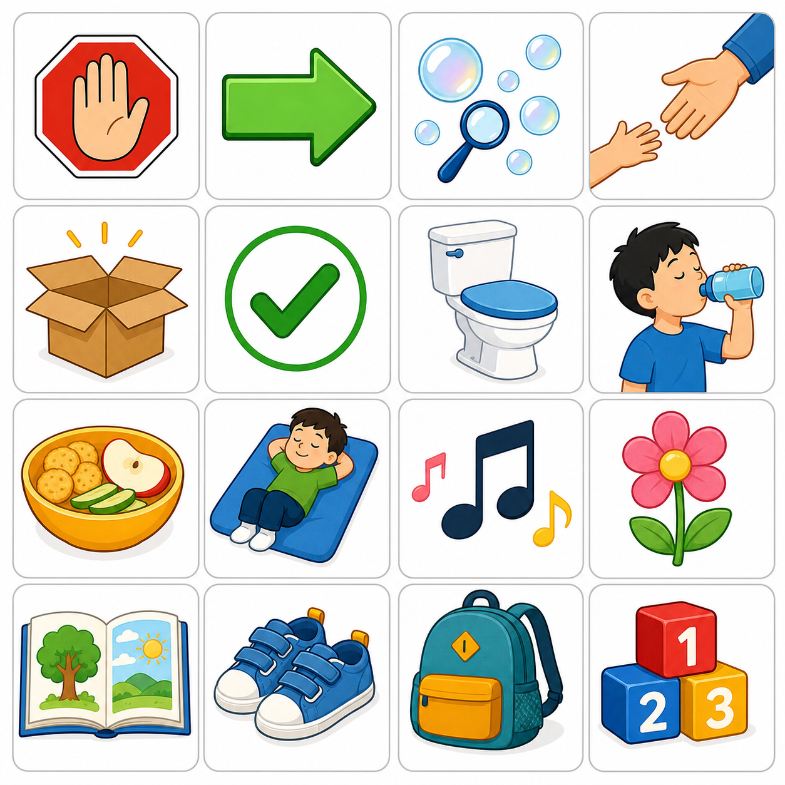

Jamie / Jamie
Local photo optional / 可本机替换照片
0%
0/0
Done / 已完成
Visual Sheet / 视觉图卡
Wordless images for pointing and matching. / 无文字图片，可用于指认和配对。

Today's Training / 今日训练内容
Practice rule / 训练原则：
regulation first, child-led motivation, visual supports, least-to-most prompting, immediate natural reinforcement, and short data-based review.
/ 先调节、跟随动机、视觉支持、由少到多辅助、即时自然强化、用简短数据复盘。